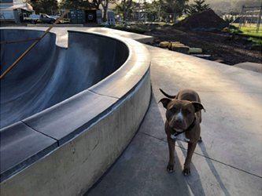
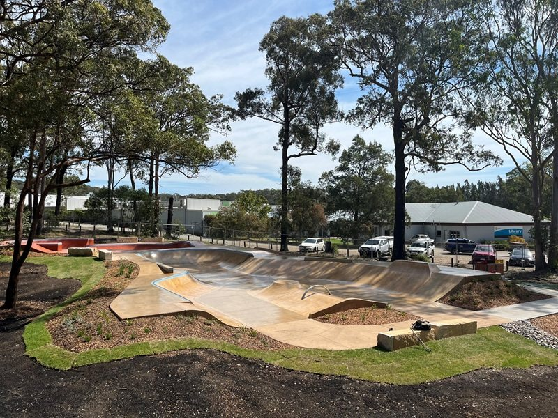
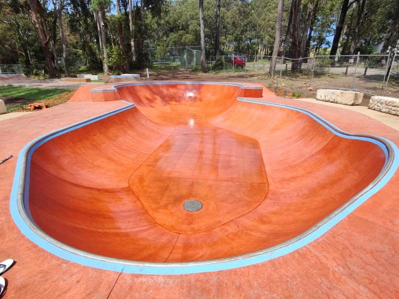
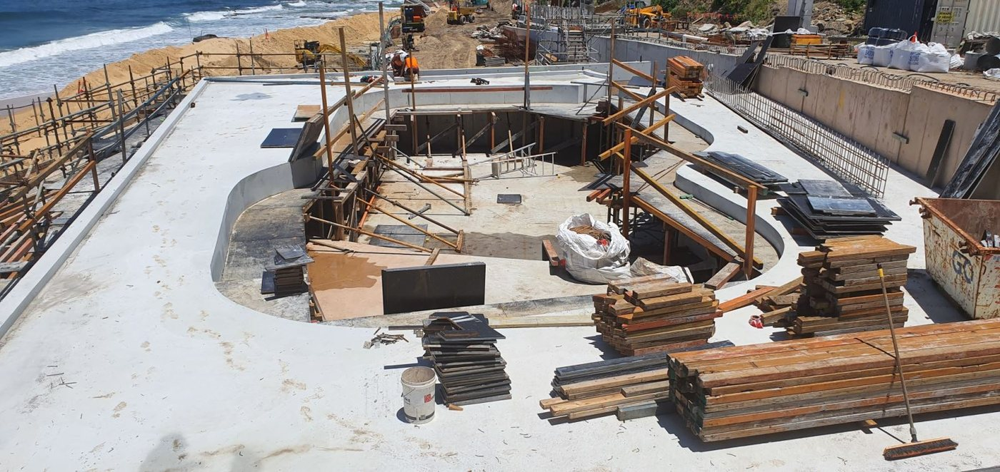
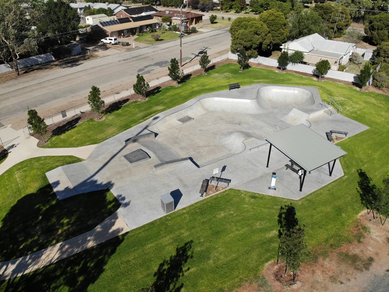
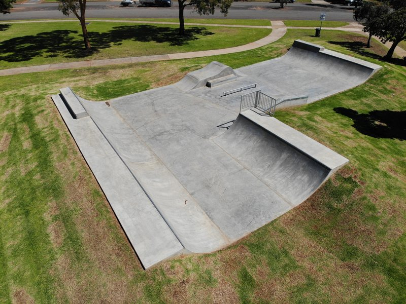
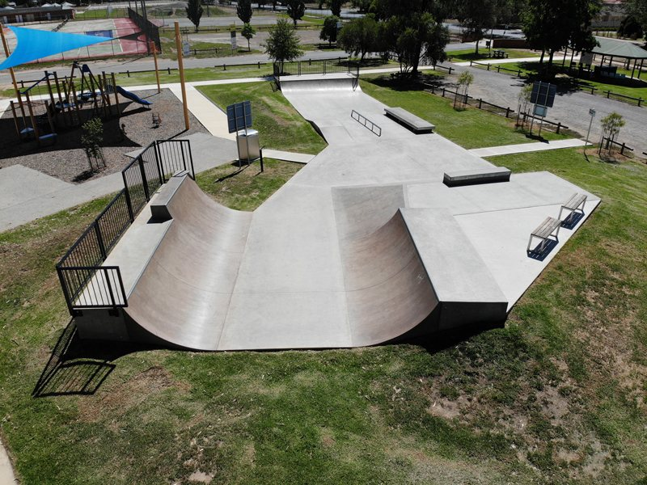
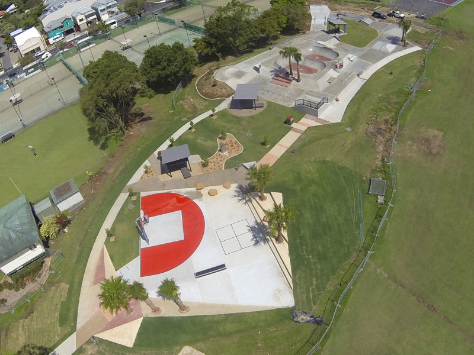

Not for construction / exploratory tender workspace
VFG capability map
A source-aware way to connect VFG's public capability signals to the tender response, pending VFG confirmation.
Public VFG positioning to map
VFG's public website describes the company as a skateboarder-owned and run skatepark design and construct company providing action sport facilities and public spaces. Its services page covers consulting, design, construction and maintenance, including safety and maintenance audits, repair solutions and in-house concrete grinding.
Use these as public source leads only. VFG should confirm the exact claims, evidence, project examples and referees used in any tender response.
Capability fit map
| VFG public capability lead | Tender-fit area | Evidence to request from VFG |
|---|---|---|
| Consulting / design / construction / maintenance | Design-and-construct scope, practical repair method and construction methodology. | Relevant project examples, team roles and delivery method. |
| Safety and maintenance audits | Condition assessment, defect prioritisation and repair recommendations. | Audit examples or maintenance/refurbishment experience. |
| Innovative repair solutions | Crack, chip, joint, coping and surface repair approach. | Method statements, photos, lessons learned and product/system notes. |
| In-house concrete grinding | Priority 1 audit response for height irregularities and surface hazards. | Process, plant, finish quality and risk controls. |
| Australia-wide project delivery | Operational capability and program confidence. | Comparable public skatepark projects and referees. |
| Skateboarder-owned practical design sensibility | Rideability, terrain diversity and feature selection. | Examples of bowls, street elements and progression layouts. |
Public project examples to request evidence for
VFG's public projects page includes examples such as Black Head NSW 2025, Newcastle Beach NSW current, Boorowa 2021, Barham 2019, Finley 2019, Howlong 2018 and Murwillumbah 2016. Treat these as source leads only. The tender response should use VFG-approved project descriptions, scopes, referees and permissions.
VFG public imagery
These images are taken from VFG's public website and project pages so the capability discussion can use real VFG visual context. They should be replaced, approved or refined by VFG before any final tender material is prepared.

{kind=link}

{kind=link}

{kind=link}

{kind=link}

{kind=link}

{kind=link}

{kind=link}

{kind=link}